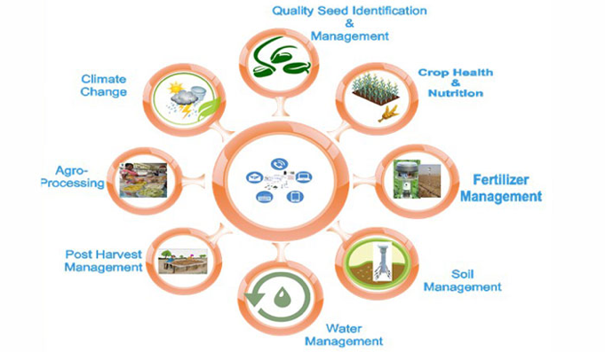

কৃষিতে-নতুন-প্রযুক্তি
মুরগির জটিল রোগ নির্ণয়ে উদ্ভাবিত দেশি পদ্ধতি
মুরগি পালন লাভজনক হলেও বিভিন্ন প্রকার রোগ এ লাভের অন্তরায় হয়ে দাঁড়ায়। প্রতিবছর বিভিন্ন রোগের কারণে ক্ষতি হয় কোটি কোটি টাকা। তাছাড়াও রোগ নিরাময়, রোগ নির্ণয় করতে বিদেশ থেকে বিভিন্ন ঔষধ আনতে হয়। মুরগির রোগ সঠিকভাবে নির্ণয় করতে পারলে তা নিরাময় করা সহজ হয়। কিন্তু এ রোগ নির্ণয়ের জন্য প্রতিবছর বিদেশ থেকে আনা হয় বিভিন্ন কিট, যা অনেক ব্যয়বহুল। এসব দিক চিন্তা করে বাংলাদেশ কৃষি বিশ্ববিদ্যালয়ের ভেটেরিনারি অনুষদের প্যাথলজি বিভাগের সিনিয়র শিক্ষক এমদাদুল হক চৌধুরী উদ্ভাবন করেছেন মুরগির দুটি মারাত্মক সংক্রামক রোগ সালমোনেলোসিস ও মাইকোপস্নাজমসিস নির্ণয়ের দেশি প্রযুক্তির কিট। এগুলো ব্যবহার করে খুব কম সময়ে সহজে ও অতি অল্প খরচে নির্ভুলভাবে রোগ দুটি নির্ণয় করা সম্ভব।
সালমোনেলোসিস মুরগির ব্যাকটেরিয়াজনিত একটি মারাত্মক সংক্রামক রোগ। এ রোগে মুরগির মৃতু্যর হার বেশি এবং মুরগির ডিম ও মাংস উৎপাদন ব্যাপকভাবে কমে যায়। ফলে খামারিরা অর্থনৈতিকভাবে ক্ষতির সম্মুখীন হয়। সালমোনেলা গোত্রভুক্ত বিভিন্ন ব্যাকটেরিয়া দ্বারা বাংলাদেশে মূলত মুরগির হোয়াইট ব্যাসিলারি ডাইরিয়া বা পুলুরাম রোগ, ফাউল টাইফয়েড নামক রোগ হয়ে থাকে। প্রচলিত পদ্ধতিতে এ রোগ নির্ণয়ের জন্য র্যাপিডএগেস্নাটিনেশন টেস্ট ব্যবহার করা হয়। কিন্তু দেখা গেছে, এটেস্টে অনেক সময় ভুল ফলাফল পাওয়া যায়। তাছাড়া এ পরীক্ষাটি তুলনামূলকভাবে ব্যয়বহুল। নানা সমস্যার কথা মাথায় রেখেই বাংলাদেশ কৃষি বিশ্ববিদ্যালয়ের প্যাথলজি বিভাগ অতি সহজে স্বল্প খরচে এবং নিভর্ুলভাবে রোগ সনাক্তকরণের জন্য "BAU Path S-antigen kit" উদ্ভাবন করেছে। উদ্ভাবিত কিটটি ব্যবহার করে মাত্র ত্রিশ সেকেন্ডের মধ্যে সালমোনেলুসিস রোগটি নির্ভুলভাবে সনাক্ত করা যাবে।
মাইকোপস্নাজমসিস মুরগির আরেকটি মাইকোপস্নাজমাজনিত মারাত্মক সংক্রামক রোগ। এ রোগেও খামারিরা দারুণভাবে ক্ষতিগ্রস্ত হয়। মাইকোপস্নাজমা গোত্রভুক্ত চার ধরনের প্রজাতি দ্বারা মুরগি, তিতির ও অন্যান্য পাখির এ রোগ দেখা দেয়। প্রচলিত পদ্ধতিতে এ রোগ নির্ণয়ের জন্য র্যাপিডএগেস্নাটিশন টেস্ট ব্যবহার করা হয়, যা আমদানি নির্ভর এবং তুলনামূলকভাবে ব্যয়বহুল ও সময় সাপেক্ষ। এ কথা চিন্তা করে বাংলাদেশ কৃষি বিশ্ববিদ্যালয়ের প্যাথলজি বিভাগ স্বল্প খরচে এবং নির্ভুলভাবে রোগ সনাক্তকরণের জন্য "BAU Path Mg-Antigen Kit" উদ্ভাবন করেছে। উদ্ভাবিত কিটটি ব্যবহার করে মাত্র ত্রিশ সেকেন্ডের মধ্যে মাইকোপেস্নাজমসিস রোগটি নির্ভুলভাবে সনাক্ত করা সম্ভব।
"BAU Path S-antigen kit" ও "BAU Path Mg-Antigen Kit" এর সংরক্ষণ ও ব্যবহার প্রণালীর স্থানীয়ভাবে সংগৃহীত সালমোনিলা ও মাইকোপস্নাজমা হতে প্রস্তুতকৃত এন্টিজেনটি ৪০ সেন্টিগ্রেড তাপমাত্রায় সংরক্ষণ করতে হয়। পরীক্ষাটি সম্পন্নের জন্য অতিরিক্ত হিসেবে গস্নাস সস্নাইড, ড্রপার, সন্দেহযুক্ত মুরগির রক্তরস প্রয়োজন হয়। সস্নাইডের উপর বিশ মাইক্রোলিটার এন্টিজেন (BAU Path Mg-Antigen Kit) এবং সমপরিমাণ রক্তরস মেশানোর ত্রিশ সেকেন্ডের মধ্যে খালি চোখে সুস্পষ্ট দানার উপস্থিতি দেখে রোগটি উপস্থিতি নিশ্চিত হওয়া যায়। এখানে উলেস্নখ্য যে, রক্তরস ও এন্টিজেন মেশানোর এক মিনিটের অধিকাল অপেক্ষা করলে ভুল ফলাফল পাওয়ার সম্ভাবনা থাকে। কেবলমাত্র এক মিনিটের মধ্যে সৃষ্ট দানা রোগটির উপস্থিতি নিশ্চিত করে।
বর্তমানে বাজারে প্রচলিত কিটগুলো আমদানি নির্ভর ব্যয়বহুল এবং এই কিটগুলোর ব্যবহার কালে গাঢ় নীল রঙয়ের দ্রবণের মধ্যে অস্পষ্ট নীল দানা সৃষ্টি হয় বলে রোগ সনাক্তকরণে জটিলতার সৃষ্টি হয়। অথচ উদ্ভাবিত কিটটি ব্যবহার করলে সস্নাইডে গোলাপী রঙয়ের দ্রবণের মধ্যে সুস্পষ্ট লালদানা সৃষ্টি হয় যা সহজেই খালি চোখে দেখা যায়।
বাংলাদেশ কৃষি বিশ্ববিদ্যালয়ের প্যাথলজি বিভাগ উদ্ভাবিত "BAU Path S-antigen kit" ও "BAU Path Mg-Antigen Kit" কিট দুটি মাঠ পর্যায়ে ব্যাপকভাবে ব্যবহার করা গেলে একদিকে রোগটি স্বল্প খরচে দ্রুততার সাথে সনাক্ত ও নিয়ন্ত্রণ সম্ভব হবে, অপরদিকে খামারিরা অর্থনৈতিকভাবে ক্ষতির হাত থেকে রক্ষা পাবে।
কৃষিতে নতুন বিপ্লব আনবে ‘ই-ভিলেজ’
অত্যাধুনিক তথ্য এবং যোগাযোগ প্রযুক্তির সদ্ব্যবহার করে কৃষি ও কৃষকের উন্নয়নে ‘ই-ভিলেজ’ নামে একটি বিশেষ প্রকল্প চালু হচ্ছে। বিশেষজ্ঞ ও সংশ্লিষ্টরা মনে করছেন, সামগ্রিকভাবে দেশকে ডিজিটাল করে ‘স্বপ্নের সোনার বাংলা’য় রূপান্তরে বর্তমান সরকারের নিরন্তর প্রচেষ্টায় এ প্রকল্প বিশেষ সহায়ক ভূমিকা রাখবে।
বৃহস্পতিবার সকাল ৯টায় (১৯ জানুয়ারি ২০১৭) রাজধানীর কৃষিবিদ ইনস্টিটিউট মিলনায়তনে এ প্রকল্পের প্রথম ধাপের আনুষ্ঠানিক যাত্রা উপলক্ষ্যে খ্যাতনামা চীনা প্রতিষ্ঠান আইসফটস্টোন, গবেষণা প্রতিষ্ঠান সেন্টার ফর রিসার্চ অ্যান্ড ইনফরমেশন (সিআরআই) এবং বঙ্গবন্ধু শেখ মুজিবুর রহমান কৃষি বিশ্ববিদ্যালয়ের মাঝে এক যৌথ সমঝোতা স্মারক স্বাক্ষরিত হবে।
প্রযুক্তির সম্ভাবনাকে কাজে লাগিয়ে দেশে কৃষি ব্যবস্থাকে সম্বৃদ্ধির সোপানে নিয়ে যেতে এ প্রকল্পে অর্থ সহায়তা দিচ্ছে চীন দূতাবাস। প্রধান অতিথি হিসেবে গুরুত্বপূর্ণ এ প্রকল্পের উদ্বোধন করবেন বিদ্যুৎ ও জ্বালানি প্রতিমন্ত্রী নসরুল হামিদ বিপু এমপি। মান্যবর চীনের রাষ্ট্রদূত অনুষ্ঠানে ‘গেস্ট অন অনার’ হিসাবে উপস্থিত থাকবেন। সংশ্লিষ্ট প্রতিষ্ঠানের প্রতিনিধি, জ্যেষ্ঠ কৃষিবিদ, গবেষকসহ অনেকে এতে উপস্থিত থাকবেন।
প্রকল্পের প্রেক্ষাপট
ক্ষুদ্র ভূখণ্ডের ক্রমবর্ধমান জনসংখ্যার দেশ বাংলাদেশে খাদ্যনিরাপত্তা প্রধানতম চ্যালেঞ্জ। কৃষিপ্রধান দেশ হওয়া সত্ত্বেও খাদ্য উৎপাদনে জলবায়ু পরিবর্তনজনিত অভিঘাতসমূহ, শিল্পায়ন ও অবকাঠামোগত উন্নয়নের মত অবধারিত চ্যালেঞ্জও রয়েছে আমাদের। এমন বাস্তবতায় গবেষকরা অবিরতভাবে চেষ্টা চালিয়ে যাচ্ছেন, বিজ্ঞান ও প্রযুক্তির বিপুল সম্ভাবনাকে কাজে লাগিয়ে কিভাবে স্বল্পতম ব্যয়ে সর্বোচ্চ ফলন নিশ্চিত করা যায়।
কৃষিবান্ধব বর্তমান সরকার নীতিগতভাবে এই বিষয়টির প্রতি সর্বাধিক গুরুত্ব দিয়ে আসছে। এরই ধারাবাহিকতায় প্রযুক্তির সর্বশেষ অগ্রগতিকে কাজে লাগিয়ে ‘ই-ভিলেজ’ নামে এ বিশেষ প্রকল্প শুরু হতে যাচ্ছে। মাটির স্বাস্থ্য, ফসলের প্রকৃত রোগ যথাযথভাবে নিরূপণ করে বিদ্যমান উপাদন ব্যয় কমিয়ে সর্বোচ্চ ফলন নিশ্চিত করাই হবে এই প্রকল্পের প্রধানতম লক্ষ্য।
যেভাবে বাস্তবায়িত হবে প্রকল্পটি
সাম্প্রতিক বিশ্বে স্মার্ট এগ্রিকালচার মডেল অনুসরণে ‘ই-ভিলেজ’ নামের এই প্রকল্পটি পরীক্ষামূলকভাবে একটি গ্রামে বাস্তবায়িত হবে। এর মাধ্যমে অর্জিত অভিজ্ঞতার আলোকে পরবর্তীতে এটিকে বৃহত্তর পরিসরে কৃষক পর্যায়ে নিয়ে যাওয়ার পরিকল্পনা রয়েছে।
প্রকল্পের শুরুতে একটি আদর্শ কৃষি প্রধান গ্রাম বেছে নেওয়া হবে। বলে রাখা দরকার, কৃষক পর্যায়ে প্রযুক্তির নানামূখি ব্যবহার বাংলাদেশে এক দশকেরও আগে শুরু হয়। তখন থেকে বিভিন্ন কৃষক সহায়ক অ্যাপসের মাধ্যমে টেলিসেন্টার বা ডিজিটাল সেন্টার থেকে কৃষকদের পরিসেবা দেওয়া হচ্ছে। জোর দিয়েই বলা যায়, দেশজুড়ে ডিজিটাল সেন্টারগুলো কৃষক পর্যায়ে প্রযুক্তির ব্যবহারকে অনেকগুণে বাড়িয়ে দিয়েছে। যদিও এসব অ্যাপস এর পরিসেবার অভিজ্ঞতায় দেখা গেছে-অনেক সময় এগুলো রিয়েলটাইম হয় না।
‘ই-ভিলেজ’ প্রকল্পটি অতীতের সেসব সীমাবদ্ধতাকে জয় করে বেশকিছু নতুন প্রযুক্তির সন্নিবেশ ঘটাতে যাচ্ছে। এর মাধ্যমে একটি স্মার্ট অ্যাপস তৈরী করা হবে। যা বাংলায় সহজে কৃষকের ব্যবহার উপযোগী, ছবি ও অডিও ভয়েসযুক্ত করা হবে। যার মাধ্যমে কৃষকরা তার জমির ও ফসলের কী অবস্থা তা জানতে পারবে। প্রকল্পের শুরুতে এটি সবজি ক্ষেতে সমীক্ষা চালানো হবে। ধীরে ধীরে তা অন্য ফসলে নিয়ে যাওয় হবে।
কৃষকরা সকালে ফোন সেটটি ওপেন করলেই তাতে একটি বার্তা যাবে, যাতে নির্দেশনা থাকবে-তাঁর ক্ষেতের সবশেষ কী অবস্থা। একই সাথে করণীয়গুলোও জানিয়ে দেবে-কী ধরণের ওষুধ, সার পানি বা অন্যান্য উপকরণ দিতে হবে। যদি তারা বাড়ির বাইরেও থাকে যাতে তার কাছে বার্তা যায় সে ব্যবস্থা থাকবে। কৃষকরা তাদের ক্ষেতের জটিল কোনো অবস্থাতে কারও কাছে দারস্থ না হয়ে নিজেই সমাধান করতে পারবেন।
স্থানীয় আবহাওয়া ও অন্যান্য উপযোগীতা বিবেচনায় নিয়ে প্রকল্পের মাধ্যমে কিছু ডিভাইস উদ্ভাবন করা হবে। বিশ্বজুড়েই কিছু ডিভাইস সচারাচর পাওয়া যায়, কিন্তু তা খুবই ব্যয়বহুল। তারপরও আবার এটা দিয়ে কেবল একধরণের ডাটা পাওয়া যাবে। কিন্তু আমাদের কৃষকদের পক্ষে তো এতদাম দিয়ে তা কেনা সম্ভব নয়। এই পাইলট প্রকল্পে মাধ্যমে একটি সাশ্রয়ী ডিভাইস নিয়ে আসব, যা কৃষকরা সামর্থ্যরে নাগালে থাকবে। যাতে একজন বা একাধিক কৃষক মিলে ওই ডিভাইসটি কিনতে পারবে।
এই ডিভাইসটি নিজ থেকে পিএইচ লেভেল বলে দেবে, ক্ষতিকারক পোকামাকড় আছে কিনা তা বলে দেবে। এই ডাটাগুলো চলে আসবে সার্ভারে। প্রকল্প সংশ্লিষ্টরা এসব ডাটা বিশ্লেষণ-সুবিন্যাস করে সফটওয়ার উন্নয়ন করে তা অ্যাপসে যাবে। কৃষিবিদরা ডাটা বিশ্লেষণগুলো করে যথাযথ পরামর্শটা অ্যাপসে যুক্ত করবেন। কৃষকদের কাছে অ্যাপসের মাধ্যমে সরাসরি পরামর্শটা চলে যাবে।
ধারণা করা হচ্ছে, যদি পরীক্ষামূলকভাবে এই প্রকল্প সফল হয় তাহলে ফসলের ফলন ২০ ভাগ বৃদ্ধি পাবে। কারণ হচ্ছে রোগবালাইসহ অন্যান্য সমস্যাগুলো যথাসময়ে চিহ্নিত করা যাবে ও যথাসময়ে তার প্রতিকার করা যাবে। অপরদিকে, উপাদান ব্যয়ও ২০ ভাগ কমবে। যার ফলে এটি আশা করা যায়, কৃষকরা ‘ই-ভিলেজ’ প্রকল্পের মাধ্যমে ৪০ ভাগ লাভবান হবে।
প্রকল্পটির এই প্রত্যাশ্যা বাস্তবে কতটা প্রতিফলিত হয়, সেজন্য টানা ৬ মাস এনিয়ে ধারাবাহিক গবেষণা চলবে। বাকী সময়ে অন্যান্য বিষয়মূহ সম্পন্ন হবে। সামগ্রিভাবে প্রকল্পটি বাস্তবায়িত হলে ডিজিটাল বাংলাদেশ গড়ার পথে তা আরও একধাপ অগ্রগতি হবে।
‘ক্রিয়েটিং ই-ভিলেজ ইউজিং স্মার্ট টেকনোলজি’ নামের এই প্রকল্পের পাইলট পর্বে গ্রামীণ জনগোষ্ঠীকে ক্ষমতায়িত করতে তাদের প্রশিক্ষতও করা হবে। যাতে তারা তাদের উৎপাদিত পণ্য দিয়ে খাদ্যপণ্য ই-ভিলেজ প্রকল্পের এসে বিক্রি করতে পারবে।
অর্থায়ন ও বাস্তবায়নে
চায়না দূতাবাসের আর্থিক সহায়তায় বঙ্গবন্ধু শেখ মুজিবুর রহমান কৃষি বিশ্ববিদ্যালয় প্রকল্পটি বাস্তবায়ন করবে। প্রকল্পের অগ্রগতি মূল্যায়ন ও পরামর্শক হিসেবে কাজ করবে গবেষণা প্রতিষ্ঠান সেন্টার ফর রিসার্চ অ্যান্ড ইনফরমেশন (সিআরআই)। এতে প্রযুক্তি ও উপকরণগত সহায়তা দেবে চায়না প্রতিষ্ঠান আইসফস্টোন ।
প্রকল্প নিয়ে যা বলছেন বিশেষজ্ঞ ও সংশ্লিষ্টরা
প্রকল্প বাস্তবায়নে মূখ্য ভূমিকায় থাকবে বঙ্গবন্ধু শেখ মুজিবুর রহমান কৃষি বিশ্ববিদ্যালয়। দেশের উচ্চ শিক্ষা ও গবেষণায় শীর্ষে থাকা এ বিশ্ববিদ্যালয়ের উপাচার্য কৃষিবিদ অধ্যাপক ড. মাহবুবর রহমান ‘ই-ভিলেজ’ প্রকল্পের উজ্জ্বল সম্ভাবনার কথা তুলে ধরে বলেন, ‘আজকের দিনটি বাংলাদেশের আধুনিক কৃষি ব্যবস্থার উন্নয়নে বিশেষভাবে স্মরণীয় হয়ে থাকবে। ই-ভিলেজ প্রকল্পের মাধ্যমে তথ্য ও যোগাযোগ প্রযুক্তি সঠিকভাবে এবং সহজলভ্য করে কৃষকদের কাছে পৌছানো সম্ভব হবে। কৃষিতে নতুন উদ্দীপনা এবং বিপ্লব ঘটানো সম্ভব হবে।’
তিনি বলেন, ‘মাননীয় প্রধানমন্ত্রী দেশরত্ন শেখ হাসিনার নেতৃত্বাধীন আওয়ামীলীগ সরকার কৃষিবান্ধব সরকার। সরকার ঘোষিত ভিশন-২০২১ ও ভিশন-২০৪১ এর রুপরেখার আওতায় ডিজিটাল এবং স্বনির্ভর দেশ গড়ার পথে কৃষিকে অন্যতম গুরুত্বপূর্ন খাত হিসেবে অগ্রাধিকার দিয়ে আসছে। ইতিমধ্যে বাংলাদেশ খাদ্যে স্বয়ংসম্পূর্ণতা অর্জন করেছে।’
কৃষি বিষয়ে উচ্চ শিক্ষা ও গবেষণায় কৃষিবান্ধব সরকারের সদিচ্ছা এবং সহযোগিতার কথা উল্লেখ করে জ্যেষ্ঠ এই কৃষিবিদ বলেন, ‘বঙ্গবন্ধু শেখ মুজিবুর রহমান কৃষি বিশ্ববিদ্যালয়ে গত চার বছরে কৃষিতে তথ্য-প্রযুক্তির ব্যবহার উল্লেখযোগ্য। এ সময়ে বিভিন্ন উচ্চ ফলনশীল ধানের জাত উদ্ভাবনসহ উল্লেখযোগ্য সফল গবেষণা উপহার দিয়েছি আমরা। যার মাধ্যমে সামগ্রিকভাবে দেশের কৃষির উন্নয়ন ও অগ্রগতি সূচিত হয়েছে।’
‘বিশ্ববিদ্যালয়গুলোতে উচ্চ শিক্ষার পাশাপাশি গবেষণা জোরদারে সরকারের অভিপ্রায়ের দৃশ্যমান প্রতিফলন বঙ্গবন্ধু শেখ মুজিবুর রহমান কৃষি বিশ্ববিদ্যালয়ে রয়েছে’-যোগ করেন অধ্যাপক রহমান।
তিনি ‘ই-ভিলেজ’ প্রকল্পের সমঝোতা স্বারক স্বাক্ষরের মাধ্যমে কৃষি সেক্টরে প্রযুক্তির বিকাশে এ প্রয়াসের ভূয়শী প্রশংসা করেন। উপাচার্য উন্নয়ন সহযোগী রাষ্ট্র চীনের প্রতিষ্ঠান আইসফটস্টোন এবং ডিজিটাল বাংলাদেশের তরুণদের স্বপ্নদ্রষ্টা সিআরআই’কে আন্তরিক ধন্যবাদ জানান।
ই-ভিলেজ প্রকল্পের সফলতার উচ্চ আশাবাদ জানিয়ে আইসফস্টোন-এর মহাব্যবস্থাপক ফেরহক ওয়াল্টার বলেন, ‘চীন দীর্ঘদিন ধরেই বাংলাদেশের উন্নয়ন সহযোগী হিসেবে কাজ করছে। ই-ভিলেজ প্রকল্পের মাধ্যমে প্রান্তিক কৃষক এবং কৃষি ব্যবস্থার আমূল পরিবর্তন এবং আধুনিক রুপান্তর সম্ভব। কৃষি অর্থনীতির গতানুগতিক হিসাব নিকাশ পাল্টে দিতে পারে প্রযুক্তিনির্ভর আধুনিক চাষাবাদ এবং বিপণন প্রক্রিয়া।’
ই-ভিলেজ প্রকল্পে সংযুক্ত থেকে বাংলাদেশের উন্নয়ন ও অগ্রযাত্রায় অংশিদারিত্বের এই সুযোগ দানের জন্য বাংলাদেশ সরকারকে ধন্যবাদ তিনি।
ফেরহক ওয়াল্টার বলেন, ‘বঙ্গবন্ধু শেখ মুজিবুর রহমান কৃষি বিশ্ববিদ্যালয়ের মেধাবী এবং চৌকস প্রযুক্তিবিদ ও কৃষিবিদদের কর্মকাণ্ডে আমরা উজ্জ্বল সম্ভাবনা দেখতে পেয়েছি। তাঁদের গবেষণা এবং সময়োপযোগী সিদ্ধান্তের ফলে প্রান্তিক কৃষকরা বিভিন্ন উদ্ভিদের রোগ ও রোগের সঠিক সমাধানের লক্ষ্যে বানানো অ্যাপস ব্যাপক ভাবে জনপ্রিয়তা পেয়েছে। আমি বিশ্ববিদ্যালয়ের উপাচার্য ও অন্য সকলের অব্যাহত সফলতা কামনা করছি।’
কৃষিতে নতুন প্রযুক্তি: ইউরিয়ার পরিবর্তে ব্যাকটেরিয়া
নটিংহাম বিশ্ববিদ্যালয় একটি নতুন প্রযুক্তিকে বিশ্ববাসীর কাছে তুলে ধরতে সক্ষম হয়েছে। এর মাধ্যমে বিশ্বের সব উদ্ভিদ পরিবেশ বিপর্যয়কারী ও চড়া দামি রাসায়নিক সারের পরিবর্তে বায়ু থেকে নাইট্রোজেন গ্রহণ করতে সক্ষম হবে।
নাইট্রোজেন ফিকসেশন এমন একটি প্রক্রিয়া যার মাধ্যমে ঘ২ এমোনিয়ায় রূপান্তরিত হয়, যা উদ্ভিদের বেঁচে থাকা এবং বৃদ্ধির জন্য অত্যাবশ্যকীয়। কিন্তু খুব কমসংখ্যক উদ্ভিদ বিশেষ করে লিগিউমস (যেমন : মটর, শিম, ডাল) বায়ুম-লের ঘ২ কে ঘ২-ভরীরহম ব্যাকটেরিয়ার মাধ্যমে ঘ২ গ্রহণ করতে সক্ষম হয়। বেশির ভাগ উদ্ভিদকে মাটি থেকে ঘ২ গ্রহণ করতে হয় এবং বিশ্বব্যাপী উৎপাদনশীল সব ফসলই কৃত্রিম ঘ২ সারের ওপর নির্ভরশীল।
বিশ্বব্যাপী নাইট্রোজেন ও প্লান্ট সায়েন্সে নামকরা অধ্যাপক এডওয়ার্ড কুকিং দীর্ঘদিন ধরেই বলে আসছিলেন যে ঘ২ জনিত সারের কারণে নাইট্রোজেন-দূষণ হ্রাস করা অতীব জরুরি হয়ে পড়েছে। নাইট্রেট-দূষণ একটি মারাত্মক সমস্যা যা এমোনিয়া এবং নাইট্রোজেন অক্সাইড দ্বারা বাযুম-লকে দূষিত করে।
এ ছাড়াও নাইট্রেট-দূষণ স্বাস্থ্যঝুঁকি বাড়ায় এবং আমাদের জলধারা ও সমুদ্রে অক্সিজেনের অভাবজনিত ‘ডেড জোন’ সৃষ্টিতে ব্যাপক ভূমিকা রাখে। সাম্প্রতিক এক গবেষণায় দেখা গেছে, নাইট্রোজেন-দূষণের ফলে সারা ইউরোপে প্রতি বছর যে ক্ষতি হয় তার পরিমাণ ৬০-২৮০ বিলিয়ন পাউন্ড।
ঘ-ভরী হলো প্রাকৃতিক নাইট্রোজেন বীজ আবরণ যা অধিক সার ব্যবহার এবং নাইট্রোজেন-দূষণ রোধে একটি টেকসই সমাধান। এটা পরিবেশবান্ধব এবং সব ফসলে ব্যবহারের জন্য উপযোগী। এক দশক ধরে নটিংহাম বিশ্ববিদ্যালয় একটি ধারাবাহিক ব্যাপক গবেষণা কার্যক্রম পরিচালনা করে আসছে, যার মাধ্যমে এই প্রযুক্তির মূলনীতি গবেষণাগারে গ্রোথ চেম্বারে এবং গ্লাস হাউসে প্রমাণ করতে সক্ষম হয়েছে।
নটিংহাম বিশ্ববিদ্যালয়ের প্লান্ট এবং ক্রপ সায়েন্স বিভাগ বিশ্বজুড়ে মৌলিক ও প্রায়োগিক গবেষণার কেন্দ্র হিসেবে একটি প্রশংসনীয় নাম; যা কৃষি, খাদ্য উৎপাদন ও গুণাগুণ এবং প্রাকৃতিক পরিবেশের গুরুত্বে তাদের সক্ষমতার ছাপ রেখেছে। এ ছাড়াও ব্রিটেনের উদ্ভিদবিজ্ঞানীদের মধ্যে সবচেয়ে বড় অংশ জুড়ে রয়েছে তাদের প্রতিনিধিত্ব।
এজোটিক টেকনোলজিসের প্রধান নির্বাহী পিটার বিস্নজার্ড বলেন, কৃষি পরিবর্তিত হচ্ছে আর ঘ-ভরী প্রযুক্তি এ পরিবর্তনে একটি বাস্তব এবং ইতিবাচক অবদান রাখতে সক্ষম হবে। এ প্রযুক্তি বিশ্বের অপেক্ষাকৃত দরিদ্র অঞ্চলের লোকদের খাদ্যসংস্থানে ব্যাপক সম্ভাবনা সৃষ্টি করবে। একই সঙ্গে বিশ্বব্যাপী কৃত্রিম সারের উৎপাদন নাটকীয়ভাবে কমাবে। ঘ-ভরী প্রযুক্তির যথাযর্থ এরই মধ্যে প্রদর্শিত হয়েছে। উদ্ভিদের অনেক প্রজাতিতে নাইট্রোজেন গ্রহণ এবং এর কার্যকারিতা গবেষণাগারে প্রমাণিত হয়েছে এবং ভরীধঃরড়হ এজোটিক টেকনোলজি এখন ঘ-ভরী প্রযুক্তিটি জমিতে পরীক্ষামূলকভাবে চালাচ্ছে, যাতে আরো কার্যকর তথ্য পাওয়া যায়।
কৃষিনির্ভর অর্থনীতির বাংলাদেশে ফসল উৎপাদনে নাইট্রোজেন-সমৃদ্ধ সারের প্রতি কৃষকের নির্ভরশীলতা অনেক বেশি। নাইট্রোজেন-সমৃদ্ধ বহু সারের মধ্যে কেবল ইউরিয়া এবং ডাই এমোনিয়াম ফসফেট (উঅউ) কেনায় কৃষকের মোটা অঙ্কের টাকা করচ করতে হয়। কৃষি সম্প্রসারণ অধিদফতরের তথ্যমতে (২০১০-১১ সালে) সারা দেশে ইউরিয়া এবং ডাই-এমোনিয়াম ফসফেট (উঅউ) ব্যবহারের পরিমাণ যথাক্রমে ২৫ লাখ ৩৯ হাজার ৪৫৯ এবং ২ লাখ ৪০ হাজার ২৯ মেট্রিক টন। ইউরিয়া ও ডাই-এমোনিয়াম ফসফেট সার কেনা বাবদ (২০১০-১১ সালে) খরচ হয় যথাক্রমে ৫০.৭৯ এবং ৭.২ বিলিয়ন টাকা। নিঃসন্দেহে ঘ-ভরী প্রযুক্তিটি বাংলাদেশের কৃষি উন্নয়নে আশাব্যঞ্জক ভূমিকা রাখবে।
নতুন উদ্ভাবিত ধান কাটা সহ মারাই মেশিনঃ
মানিকগঞ্জ জেলার ঘিওর উপজেলাধীন বালিয়াখোরা গ্রামে কৃষি প্রযুক্তি খাতে যোগ হলো নতুন এই ধান কাটা সহ মারাই মেশিন, নতুন এ প্রযুক্তিটি আমদানী কারক কৃষিসমপ্রসারন অধীদপ্তর।
এই মেশিনটি দিয়ে প্রতি ঘন্টায় চল্লিশ সতক ভূমির ধান কাটা এবং মারাই করা সম্ভব বলে জানান এই মেশিনটির মালিক, তিনি আরো জানান' প্রতি ৩০ সতক ভূমির ধান ২৫০০/= টাকা হারে ধান কাটা ও মারাই ককরা হয়"যা থেকে কৃষকের প্রয় এক থেকে দের হাজার টাকা সাশ্রয়ী হয়। এ বিষয়ে উপজেলা কৃষি কর্মকর্তা বলে কৃষকদের প্রযুক্তি খাতে এ পর্যন্ত অনেক গুলো প্রযুক্তি উদ্ভাবন হয়েছে তার মধ্যে এটা উন্নতম।
যার ফলে কৃষক অতি সহজেই ধান কাটা থেকে মারাইয়ের কাজ সম্পন্না করতে সক্ষম হবেন। যেখানে কৃষকের ৩০ সতক ধান কাটা ও মারাই সম্পন্ন করতে খরচ হয় ৩৫০০ থেকে ৪০০০ (হাজার) টাকা। আর এখন কৃষক ২৫০০ টাকা হলেই ১ ঘন্টার মধ্যেই তা সম্পন্ন করতে পারবে। এ বিষয়ে তিনি আরো বলেন কৃষক আজ প্রযুক্তি চায় প্রযুক্তির উপর নির্ভর করে দেশটাকে এগিয়ে নিতে চায়। এ ব্যপারে স্থানীয় কৃষকের সাথে কথা বলে যানা যায় তারা নতুন এ প্রযুক্তিকে হাতে পেয়ে অনেক আনন্দীত, তারা অতি অল্প সময়ে সোনালি ধান গোলায় উঠতে পারবে।
বৃষ্টির হাত থেকে রেহাই পাওয়া যেতে পারে বলে তারা মনে করেন।